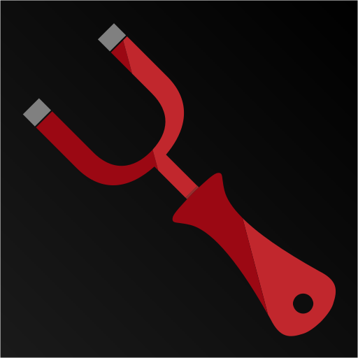

 TorrCrow
Download
Changelog
Privacy Policy
CHANGELOG
v1.0.0
Initial release
v2.0.0
Some under the hood changes
v3.0.0
New UI in settings screen
Bug Fix on magnet link copy when internet is not available, proper message is shown
v3.1.0
Added Browse Top Torrents
v3.2.0
Added open Flud app on copying magnet link
Added apply button in Change Base Url settings to apply or discard the changed url settings
v3.3.1
Changed magnet link sharing UI
Added open Seedr.cc site directly from app, button on magnet link sharing screen
v4.0.0
Added About section
v5.0.0
Added version number in the About section
Added option to download the latest version of app directly from app
Users will receive push notifications of latest news about the app
v5.1.0
Changed colors of text in magnet sharing screen
Changed The Pirate Bay url
v6.0.0
Added the option to change the theme color of the app
v6.1.0
Search query is shown in results page
Updated The Pirate Bay url
Fixed a bug in results page on-scroll-refresh
v7.0.0
Now if you reset url of the sites from the settings it will fetch the latest url from the server
- This will eliminate the need to update the app to get the updated url by resetting
v7.1.0
Users can check for updates in the app directly
v7.2.0
Users can download latest version from the app directly
- No need to go to google drive
v7.3.0
Category of torrent is shown in results screen
v7.4.1
Bug fix in 1337x
- Searching unexpectedly showing check internet connection for some search queries
Added 1337x searching too in browse top torrents
- Earlier only The Pirate Bay was there
v8.0.0
Added url testing feature to check whether given link will be able to fetch data or not
Only enabled torrent search engine will work for top torrents
Minor UX change in base url settings dialog
- Won't close after resetting url
v8.1.2
Filter out result in torrent result screen
Improved error handling in search
Focus on text field on test url screen (open keyboard automatically)
v9.0.0
Added Browse Recent Torrents
Minor Bug fixes
v10.0.0
Users can select from installed torrent clients
v10.1.1
Added IDM also in torrent clients
Added Get flud link if no torrent clients found
v11.0.0
Added Search History feature
Minor changes
v12.0.0
Added Favorite Torrents option
Minor changes and bug fixes
v13.0.0
Added MovCr search engine
- The MovCr site wrongly shows seeders/leechers as 0 for all torrents
Added search engine name in each torrent
Bug fixes
v13.1.0
Bug fixes in MovCr
Search time shown
Minor UX Changes
v13.2.0
Added Pull to Refresh in results screen
Added option to open torrent in Webview
v14.0.0-beta
Added Ettv search engine
Minor UI changes
Minor Bug fixes
TPB removed since it is not working anymore and hence Recent Torrents also removed
v14.0.1
Bug fix in Ettv magnet copying
Bug fix in about screen opening
Other minor bug fixes
Minor UI changes
Idope removed since it is not working anymore
v14.1.1
Added zooqle search provider
v14.2.2
Re-Added The Pirate Bay
UI improved
Push Notifications improved
- User can see push_notification and interact with it on clicking the notification instead of just opening the app
v14.5.4
Added Yify
Added tabs in results screen
Added more torrent clients to show in share if installed
Sort torrents button changed to floating button
Fixed Bug in TPB magnet copy
Error msg is shown for a particular search provider while searching if error occurred
Bug fix in about section opening
v15.0.0
Leechers shown in torrent
Search Time Drastically Reduced
- Now avg search time is about 3 seconds
- Earlier it was 10-15 seconds
v15.3.4
Added Sort By Time
User can make torrent client default from settings
Added open in browser option along with open in webview
Improved responsiveness
Fixed bugs
UI improved
v15.4.3
Added ExtraTorrent
Bug Fixes
v16.0.0
Added Sync settings button in settings screen
v16.2.2
Added Torlock search engine
UI changes
Bug fixes
v16.2.4
Bug fix
UI update
v16.3.1
Added Auto sync settings from server option
Bug fix
v16.4.3
Added Url test feature in base url settings
Added new theme with color hex #4a7ca5
UI fix
v16.6.0
Added voice search
- Requires Android 5.0+ now due to mic access (earlier it was 4.1+)
Added AnimeTosho.org for animes
v17.0.0
Added Option to Hide Torrents with 0 Seeders
Added FAQs
Added Limetorrents.cc
Removed In-App Update option
Removed Storage permission request
Minor changes and bug fixes
v17.2.4
Torrent client opens magnet directly now
In App Update option improved
Reduced app size
Bug fix
UI update
v18.0.0
Improved search results filter logic
- Use multiple words separated by space
- Exclude torrents based on minus sign in front of the word
App name changed to TorrCrow
v18.4.0
Added filter by size
Added share magnet option
Added changelog
Added timeout in search
v18.5.1
Added KickassTorrents
Search history results are reversed
- Latest search comes on top
- Earlier Latest search was shown on bottom
Minor UI changes
v18.5.2
Bug fix in KickassTorrents magnet fetching
v18.7.0
Added Rutor.is search provider
Added two more engines in Top Torrents
v18.7.3
Check for updates bug fix
Omitted irrelevant results from ExtraTorrents
Minor UX changes
v19.0.0
Added Nyaa
Added SkyTorrents
Added Telegram channel link in About
App logo updated
Voice dialog UI updated
Bug fixes
v19.3.0
Added Test all sites button
Added Invert search engine toggle state
Updated ExtraTorrent to remove irrelevant results
Minor bug fixes and changes
v19.3.1
Bug fixes
v19.4.0
Add category in ExtraTorrent
Minor changes
v19.4.1
Minor fix
v19.4.3
Bug fixes
v19.5.0
Top torrents tabs now shows only which provide Top torrents
v19.5.2
Bug fixed in search filter option in result screen
Show Top torrents tabs only if turned on in settings
v19.6.0
Improved error toast messages, show one toast for a category instead of individual
App now opens without internet
Added new FAQ
Fixed UI in changelog
v19.7.1
Sort by time bug fixed
v19.7.2
Torrent menu closes automatically on click of Download torrent button
UI changes
v19.8.0
UI / UX improvements
v19.8.1
UI improvements
v20.0.0
Theme improvements
Search suggestions
UI changes
v20.1.2
Users can now sort Torrent Providers order from Toggle Search Provider Screen
- Long press on Provider and move up and down as per need
UI Bug fixes
v20.3.0
Changed loading results UI
Many under the hood changes including the better & faster way to store favorite torrents
v20.4.0
Added Rarbg
Bug fixes
v21.1.2
Added option to hide adult torrents
v22.1.0
Bug Fix (Grey / White screen on search)